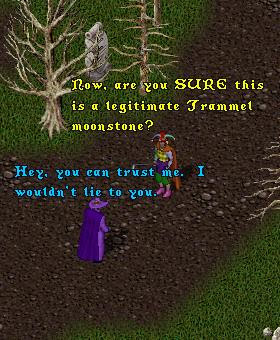
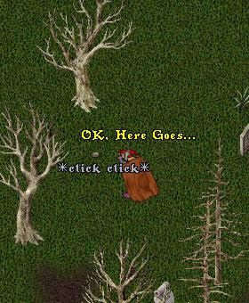
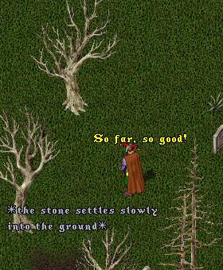
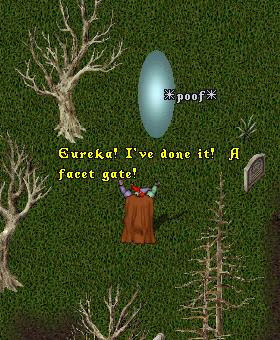
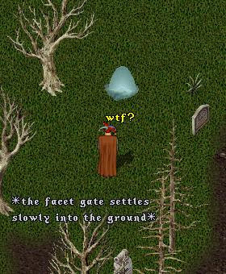
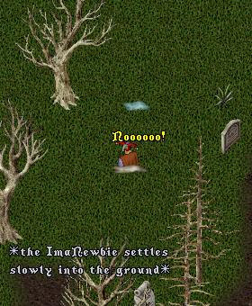
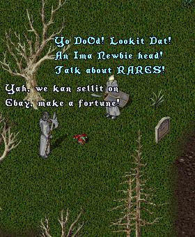

Episode 112: You Can't Get There from Here - This episode begins with ImaNewbie once again attempting to obtain a Trammel moonstone so that he can escape the dreaded PK stronghold of Felucca.






